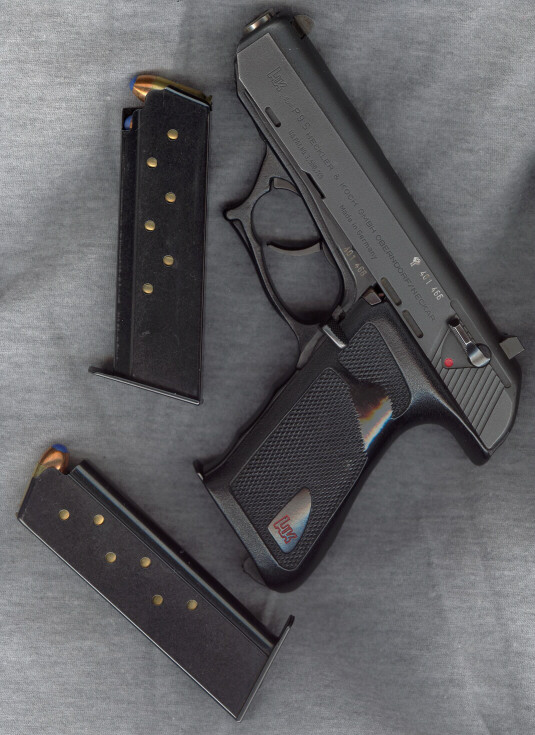
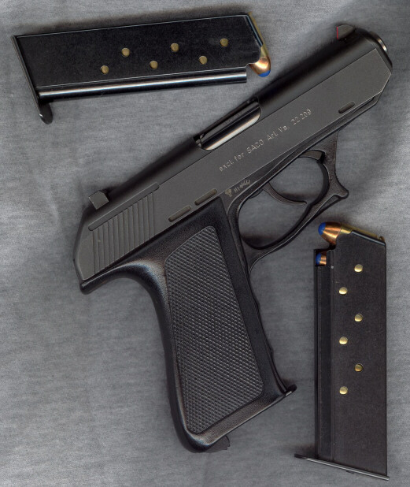

Some Gun Pix
by L. Neil SmithPage 1


The first two are of my H&K P9S .45. I've spoken of it before because it seems to contain "camera parts", and it's a little hard to handle in rapid fire -- it flips up and down very quickly rather like the Walther PPK it resembles. It badly needs some kind of trigger-stop, as it has at least a quarter-inch of overtravel. I often regret not getting the model with that and an adjustable rear sight. Despite that PPK resemblence, it's a rather large weapon, but very light, with a steel frame jacketed everywhere in some ahead-of-its-time super-tough, resilient plastic. I took the never-to-be-sufficiently-cursed thumbrest off of the left side of the grip long ago. In general it feels very good in the hand, although it's a long reach to the doible-action trigger. The control on the left side where an American magazine catch would be is a combination cocking/decocking lever and slidestop.
Note that the spare magazines (and the one in the gun) are loaded with Glaser Blue Safety Slugs. This is an indoor gun. The extra spare magazine I received as an extremely kind gift from my friend Tom Kozan. Thanks to him, it now feels like a real gun.
I get this piece out first thing in the morning, when I go to the kitchen to make coffee, because most of my other weapons are so cold they hurt my arthritic hands. Guess I could use the Glock for that, as well, but this one just feels good.